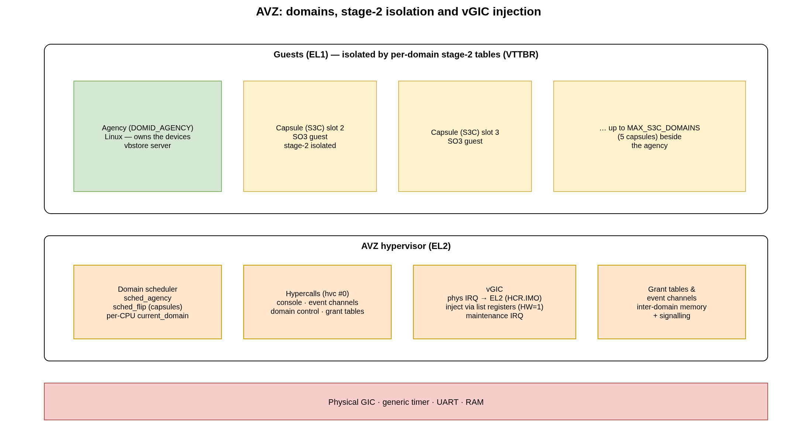

4. AVZ Hypervisor
AVZ (Agency VirtualiZer) is the type-1 hypervisor that ships inside the
SO3 tree. Built with CONFIG_AVZ, the very same code base runs at EL2 on
ARM64 and hosts guest domains at EL1. AVZ is small and Xen-inspired: it
provides stage-2 memory isolation, a domain scheduler, hypercalls, event
channels, grant tables and a virtual GIC, and nothing more.
AVZ is also the foundation of the SO3 capsule model: an agency domain owns the hardware while one or more lightweight capsule (S3C) guests run beside it.
Note
The agency is a Linux kernel: it owns the hardware and hosts the
capsules. The agency, together with the SOO framework, lives in a
separate repository. The hypervisor can equally boot a
plain SO3 kernel in the guest slot (built with CONFIG_SOO=n, so no
capsules) — that is the demonstration shipped with this repository, enough
to exercise the hypervisor on its own.
{kind=link}

Fig. 4.1 AVZ: domains isolated by stage-2 tables, and the EL2 services beneath them.
The code lives under avz/ (kernel, memory, scheduler, hypercalls, grant
tables, capsule build/inject) together with the EL2-specific parts of
arch/arm64 (head.S MMU setup, exception.S EL2 vectors,
context.S stage-2 switch, cache.S EL2 TLB ops) and the virtual GIC in
devices/irq/.
4.1. Boot and guest loading
The hypervisor entry point is avz_start() (avz/kernel/setup.c). After
early CPU, memory and device initialisation it prints its banner and loads the
guest domain. U-Boot’s guest-boot command hands AVZ two FIT images — the
AVZ ITB in x0 and a separate SO3 guest ITB in x1 (see
Build System) — and loadAgency() parses the guest from the x1
ITB. AVZ places the guest’s kernel and device tree in RAM,
injects the guest initrd (the ITB ramdisk node) into the guest’s
/chosen, builds the guest’s stage-2 page tables and sets the guest entry
point. AVZ then erets to EL1, and the guest boots as an ordinary SO3
kernel (kernel_start()). The console trace looks like:
********** Smart Object Oriented technology - AVZ Hypervisor **********
...
Now bootstraping the hypervisor kernel ...
***************** Loading Guest Domain *****************
...
********** Smart Object Oriented SO3 Operating System **********
Guest memory is organised in memory slots (avz/include/avz/memslot.h):
slot 0 is AVZ itself, slot 1 the agency, and the remaining slots are capsules.
Each slot maps a guest intermediate physical address (IPA) range to real
physical memory; ipa_to_pa() / pa_to_ipa() convert between them.
4.2. Domains
A domain (struct domain, avz/include/avz/domain.h) is a guest
instance: its virtual CPU state, its event-channel table, a pointer to the
shared info page and its scheduling metadata. Well-known identifiers
(avz/include/avz/uapi/avz.h):
Identifier |
Meaning |
|---|---|
|
the agency guest — Linux, or a plain SO3 ( |
domain id 1 |
reserved (the agency occupies memory slot 1 but keeps domain id 0) |
domain ids 2 … |
capsule domains |
|
up to five capsules alongside the agency ( |
Each domain shares a page with the hypervisor — the avz_shared structure —
carrying its domain id, event-channel pending bits, the upcall state and the
guest’s device-tree address.
4.3. Hypercalls
Guests call into AVZ with the hvc instruction, which traps to the EL2
synchronous handler (el12_sync_handler in arch/arm64/exception.S) and is
dispatched by avz/kernel/hypercalls.c. Every hypercall is one cmd value
in that single dispatcher. Three are always compiled in
(avz/include/avz/uapi/avz.h):
AVZ_EVENT_CHANNEL_OP— allocate / bind / send / close event channels;AVZ_CONSOLE_IO_OP— console output for guests;AVZ_DOMAIN_CONTROL_OP— domain control (pause / unpause a capsule, …).
The rest are the SOO commands, declared in soo/include/soo/uapi/soo.h and
compiled in only with CONFIG_SOO: the grant-table op
(AVZ_GRANT_TABLE_OP), domain description (AVZ_GET_DOM_DESC), capsule
lifecycle (AVZ_INJECT_CAPSULE, AVZ_START_CAPSULE, AVZ_KILL_S3C,
AVZ_GET_S3C_STATE / AVZ_SET_S3C_STATE), the snapshot primitives
(AVZ_S3C_READ_SNAPSHOT / AVZ_S3C_WRITE_SNAPSHOT), the direct-communication
events (AVZ_DC_EVENT_SET) and the virtual-framebuffer ops
(AVZ_FBDEV_*). They are not layered on top of the three generic ones — see
SO3 Capsules (SOO framework).
4.4. Domain scheduling
AVZ runs each domain on a CPU according to its role. The agency uses the
sched_agency policy; capsules are scheduled by sched_flip
(avz/kernel/sched_flip.c), a lightweight round-robin over the capsule
domains. A per-CPU current_domain pointer tracks the running guest; switching
domains saves and restores the EL1 register banks and reprograms VTTBR_EL2
through __mmu_switch_vttbr() (arch/arm64/context.S).
4.5. Inter-domain communication
4.5.1. Event channels
Each domain has NR_EVTCHN (128) event-channel ports. A port can be
unbound (waiting for a peer), interdomain (bound to a remote domain’s port)
or bound to a virtual IRQ. Sending an event sets a pending bit in the remote
domain’s avz_shared page and, if needed, injects a virtual interrupt so the
guest is woken. Event channels are the signalling half of the split-driver
model.
4.5.2. Grant tables
Grant tables (avz/kernel/gnttab.c) let one domain share specific memory
pages with another in a controlled way. A domain reserves a small set of grant
IPA pages; a peer maps a granted page by reference. This is how the shared rings
of the frontend/backend drivers and the capsule framebuffer are set up.
4.6. Virtual GIC
Because guests must not touch the physical interrupt controller directly, AVZ provides a virtual GIC.
HCR_EL2.IMOroutes all Group-1 physical IRQs to EL2. The EL2 IRQ handler (avz_el2_irq_handle()for GICv3,irq_handle()for GICv2) decides what to do with each interrupt.The hypervisor’s own interrupts — the EL2 timer (CNTHP, PPI 26) and the vGIC maintenance interrupt (PPI 25) — are handled locally.
All other interrupts destined for a guest are injected through the GIC list registers (
ICH_LR*_EL2on GICv3, the GICH MMIO frame on GICv2). The injected entry is hardware-backed (HW = 1) so that the physical interrupt is deactivated automatically when the guest writes its own end-of-interrupt — keeping hypervisor overhead minimal.Accesses by a guest to the physical GIC distributor are not mapped in the guest stage-2 tables; they trap to EL2 and are emulated by the vGIC (
devices/irq/vgic.c), which forwards most register accesses and translates SGI (software-generated interrupt) requests into AVZ’s targeted-IPI helper.